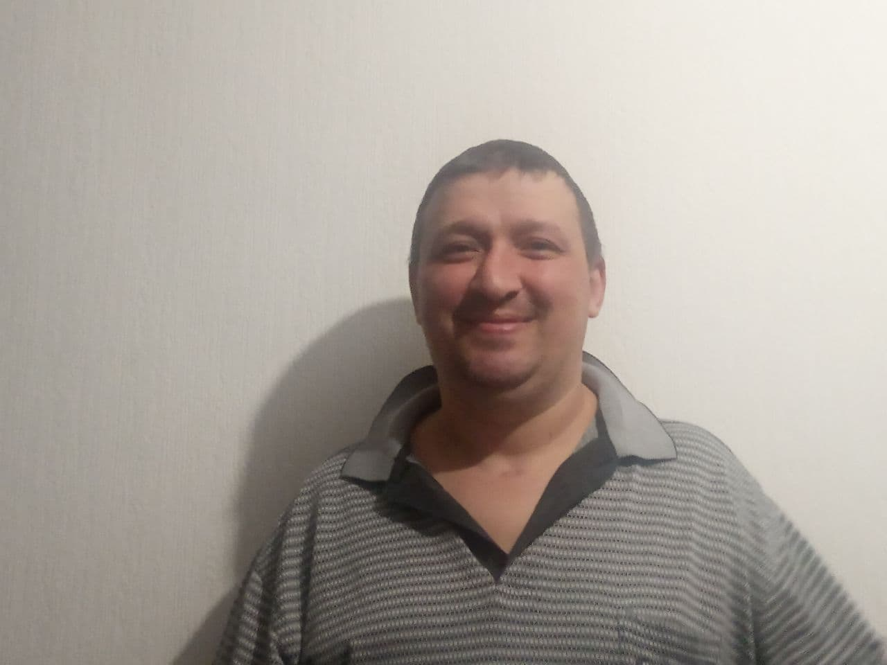

About me
Let me introduce myself, I am Vitaliy Diakin. I am 39 years old. I live in Kyiv, the city I was born in.
As for my appearence I can say that I:
- qite tall
- stout
- I have fair short hair
- blue eyes
. As for my charecter, people say I am
- kind
- honest
- reliable
- outgoing person
But to my opinion the worst thing about me is that I am a little stubborn sometines.
